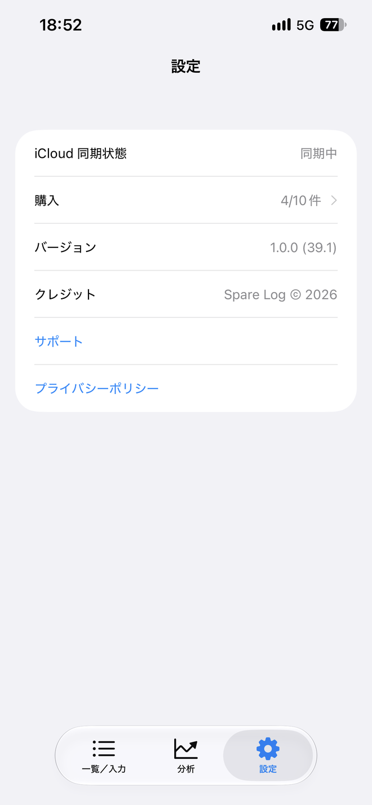
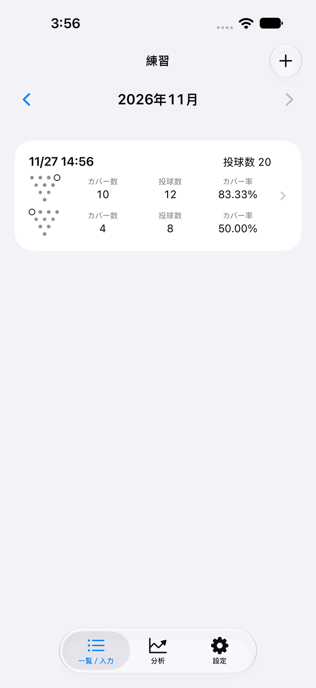
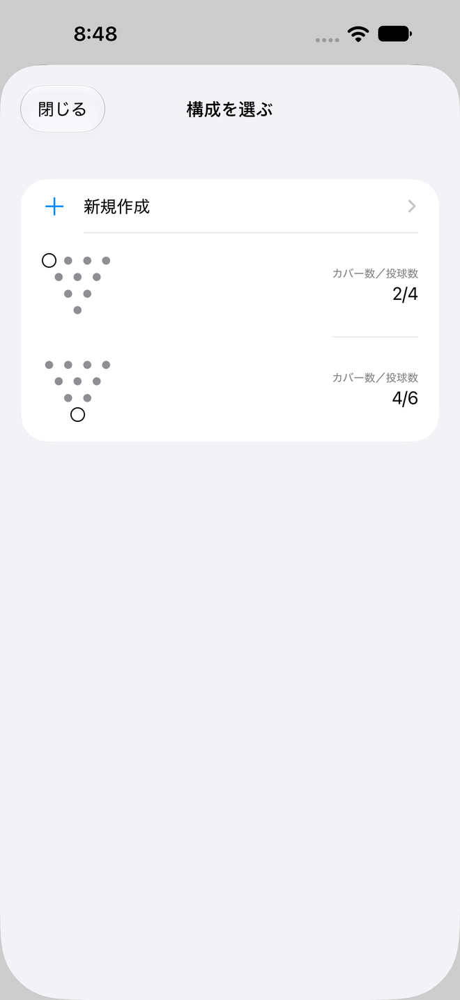
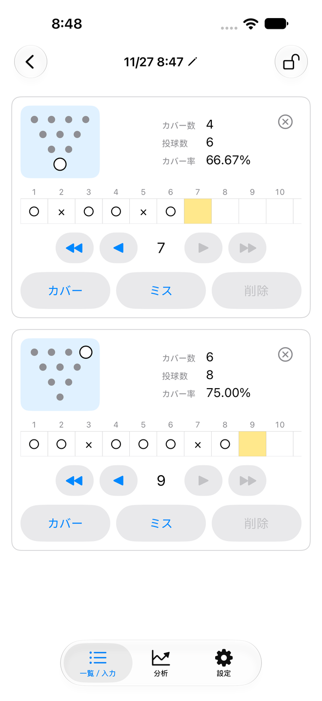
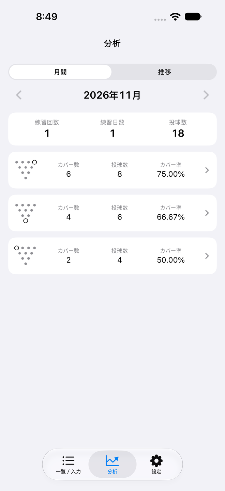
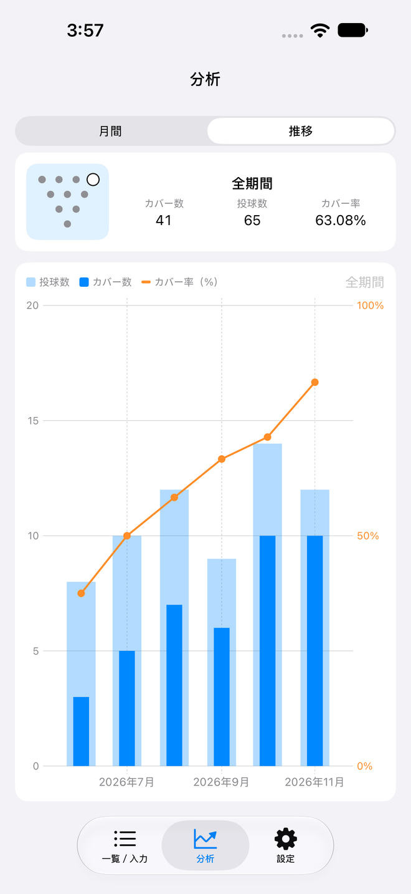

不具合やご質問は、次の連絡先へお送りください。
お送りいただく際は、iPhone の機種、iOS のバージョン、アプリのバージョンを添えていただくと、確認しやすくなります。アプリのバージョンは、下の画面の「バージョン」の行で確かめられます。






いちばん新しい練習以外は、誤って書き換えないよう、開いた直後は編集ロックがかかっています。記録画面の右上の鍵マークで切り替えられます。
無料で保存できる練習は 10 件までです。買い切りの課金（1 回のお支払い）で、この上限がなくなります。上限に達していても、既存の記録の閲覧、投球の記録、集計、削除はできます。練習を削除して 10 件未満にすれば、購入しなくても新しい練習を追加できます。
購入画面は、設定タブの「購入」、または上限に達した状態で「一覧／入力」タブの右上の「＋」を押すと開きます。
アプリを入れ直したときや、別の iPhone で使うときは、同じ Apple Account で購入の情報が自動で反映されることがあります。反映されないときは、設定タブの「購入」から購入画面を開き、「購入を復元」を押してください。購入済みの場合は、購入済みである旨が表示されます。
記録は iPhone の中と、利用者自身の iCloud にだけ保存されます。開発者が記録を受け取ることはありません。詳しくはプライバシーポリシーをご覧ください。
iCloud にサインインしていると、同じ Apple Account の端末の間で記録が同期されます。サインインしていなくても、iPhone の中だけで使えます。設定タブで、iCloud の同期状態を確認できます。
iCloud からサインアウトするときのご注意: iCloud からサインアウトすると、同期していた記録は iPhone から消えます。同じ Apple Account でもう一度サインインすると、iCloud に保存されていた記録が戻ります。サインインしないまま付けた記録は、iCloud に保存されないため、戻ることを約束できません。
iPhone（iOS 17 以上）で、縦向きに対応しています。画面は日本語です。